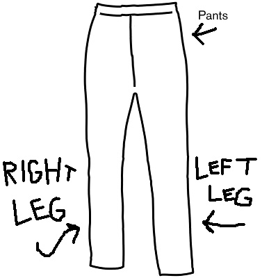
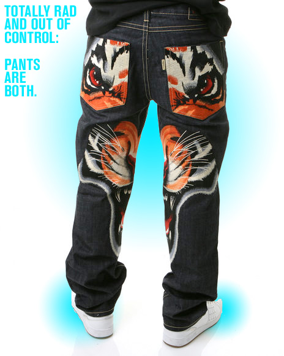

Pants.
Puttin' em on one leg at a time.

Sometimes I where pants when I'm in Phone Is Ringing
Types of pants:
Breeches
Trousers
Jeans
Knickers
Leggings
Pantalettes
Extra Long Shorts
Brown

Three things I like on my pants:
Cheeseburger spring rolls
The last hot guy that got a free site
Weddings
If I could ask Pants about something, I would ask:
Is that a client calling?